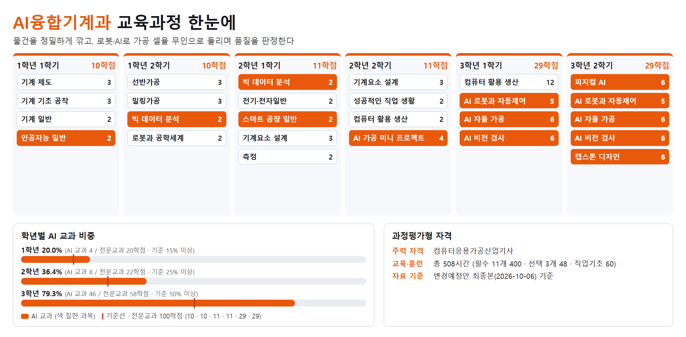
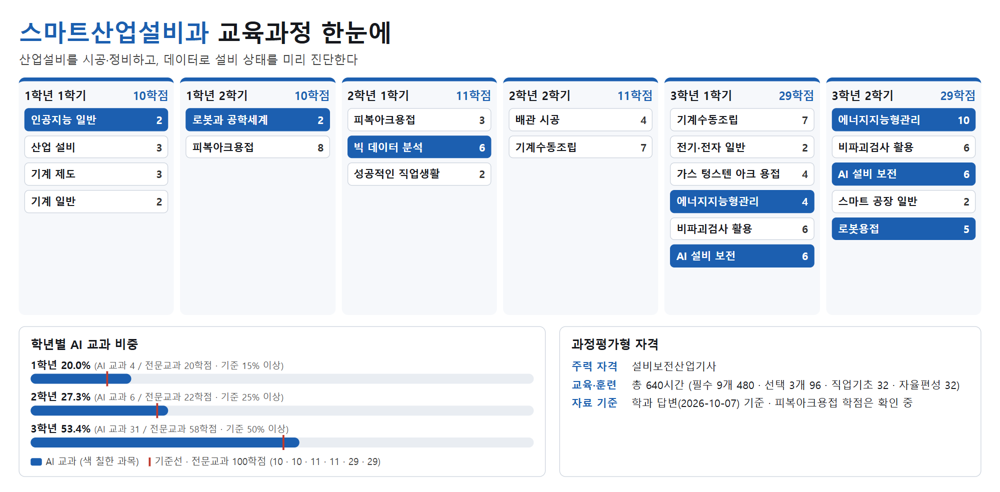
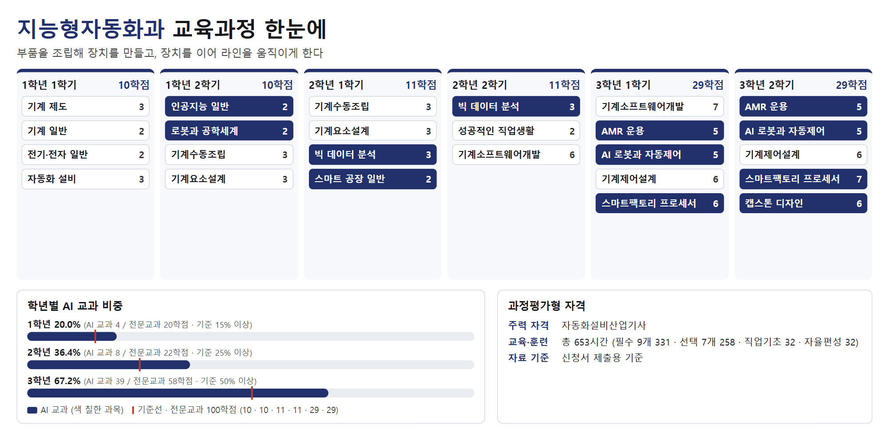
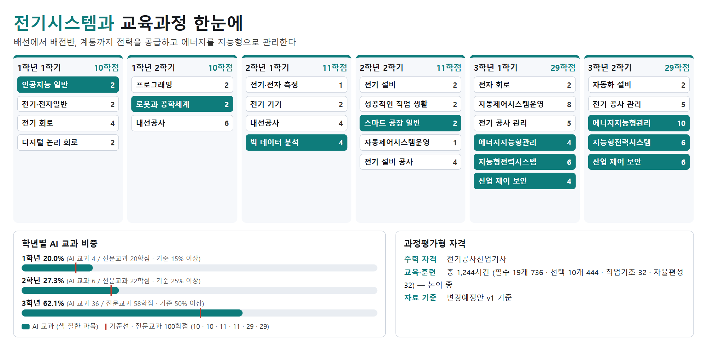

4개 학과 공통 — 신청서 본문에 넣은 그림

11_4개학과_AI교과비중.png · 원본(HTML)

12_4개학과_과정평가형편성.png · 원본(HTML)

13_본문20쪽_4대학과재편.png · 원본(HTML)

14_본문20쪽_4대전문학과개편.png · 원본(HTML)

15_본문21쪽_4가지색깔.png · 원본(HTML)

16_본문42쪽_지역전략산업과학과직무.png · 원본(HTML)
실습실 배치도 (변경 후) — 신청서 본문에 넣은 그림

배치도_변경후/창조관1층_변경후.png

배치도_변경후/명장관1층_변경후.png

배치도_변경후/명장관2층_변경후.png
학과별 교육과정 한눈에 — 신청서 본문(각 학과 편제표 아래)에 넣은 그림

21_AI융합기계과_교육과정한눈에.png · 원본(HTML)

22_스마트산업설비과_교육과정한눈에.png · 원본(HTML)

23_지능형자동화과_교육과정한눈에.png · 원본(HTML)

24_전기시스템과_교육과정한눈에.png · 원본(HTML)
지능형자동화과 — 검토용 부록에 실린 그림

01_23쪽_경력발전경로.png · 원본(HTML)

02_52쪽_학년별교육과정.png · 원본(HTML)

03_59쪽_자격로드맵.png · 원본(HTML)

04_115-116쪽_실습실배치도.png · 원본(HTML)

05_22쪽_취업자격진학_변경전후.png · 원본(HTML)

06_36-37쪽_교육과정개편중점.png · 원본(HTML)

07_59-60쪽_능력단위위계.png · 원본(HTML)

08_63-65쪽_직무연계흐름도.png · 원본(HTML)

09_전공계열비중.png · 원본(HTML)

10_실습실3개년확충로드맵.png · 원본(HTML)